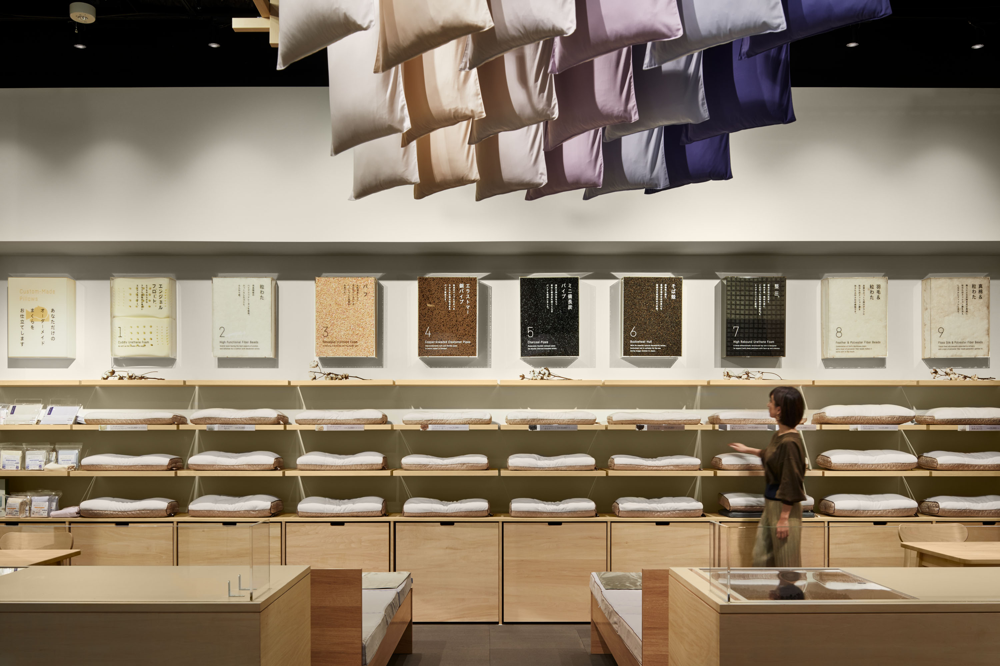
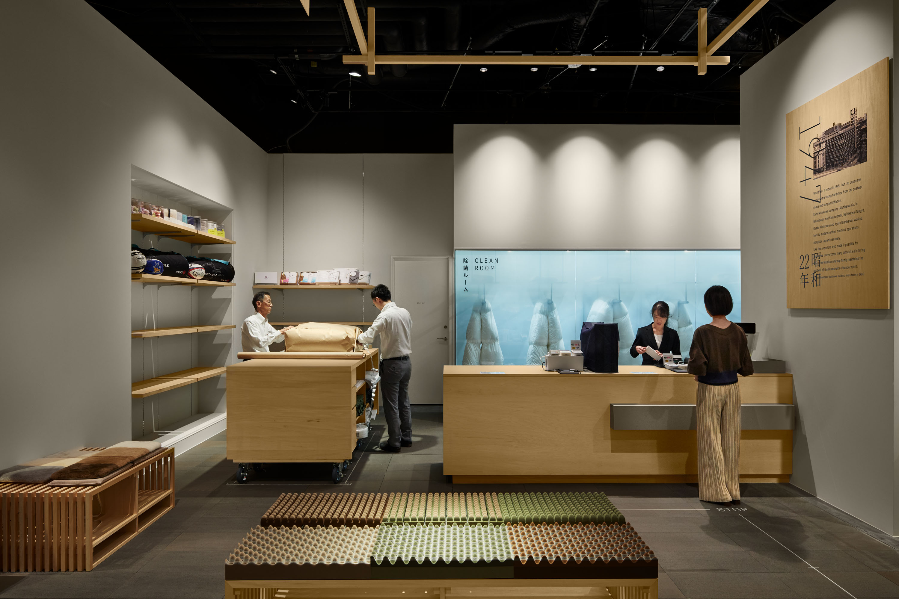

#design#planning#graphicdirection
日本橋西川の新店舗ファサードデザイン、グラフィックディレクションを担当。店内には来場者が楽しめるコンテンツが散りばめられており、体験型店舗としてメディアにも取り上げれた。格子を用いてこれまでの老舗西川の歴史に触れた日本らしいデザインのファサードを設計。西川の歴史を表現するグラフィックのディレクションを担当。
-REALevent



